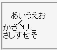
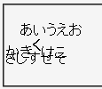

親要素のline-heightプロパティで指定した高さの範囲から上か下にはみ出るvertical-alignプロパティを指定した子孫要素を含む行が前の行または次の行に重なって表示される。
<p style="line-height:1;">あいうえお<br> かき<strong style="vertical-align:0.5em;">く</strong>けこ<br> さしすせそ</p>
あいうえお
かきくけこ
さしすせそ
strong要素を0.5em分だけ上方向にずらしています。strong要素を含む行は前後の行と重ならないように行の高さが広がるはずです。
Moz1.0.2での表示（標準モード）
WinIE6.0での表示（標準モード）
親要素のline-heightプロパティを充分大きな値にするとこのバグを回避できます。
<p style="line-height:1.5;">あいうえお<br> かき<strong style="vertical-align:0.5em;">く</strong>けこ<br> さしすせそ</p>
あいうえお
かきくけこ
さしすせそ
WinIE6.0では標準・互換モードの両方で不具合の発生が確認されました。